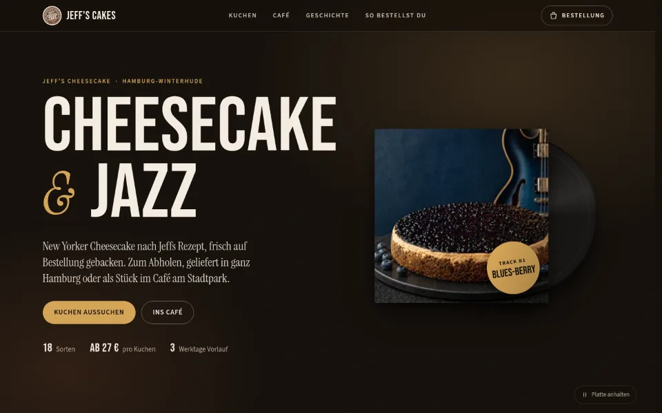
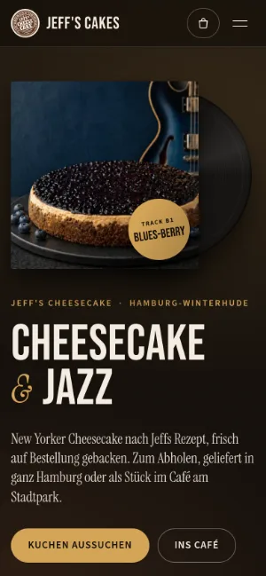
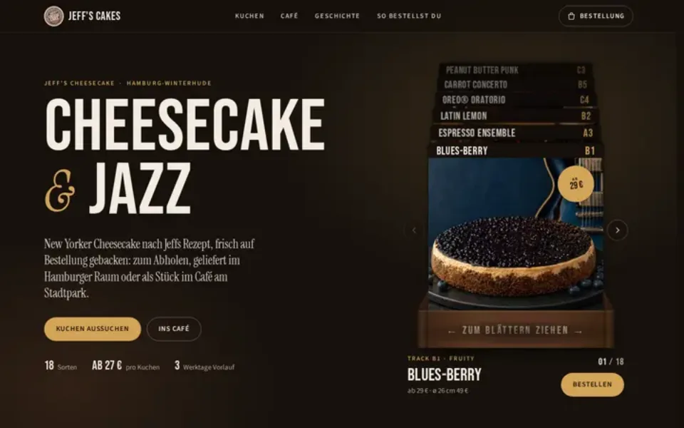
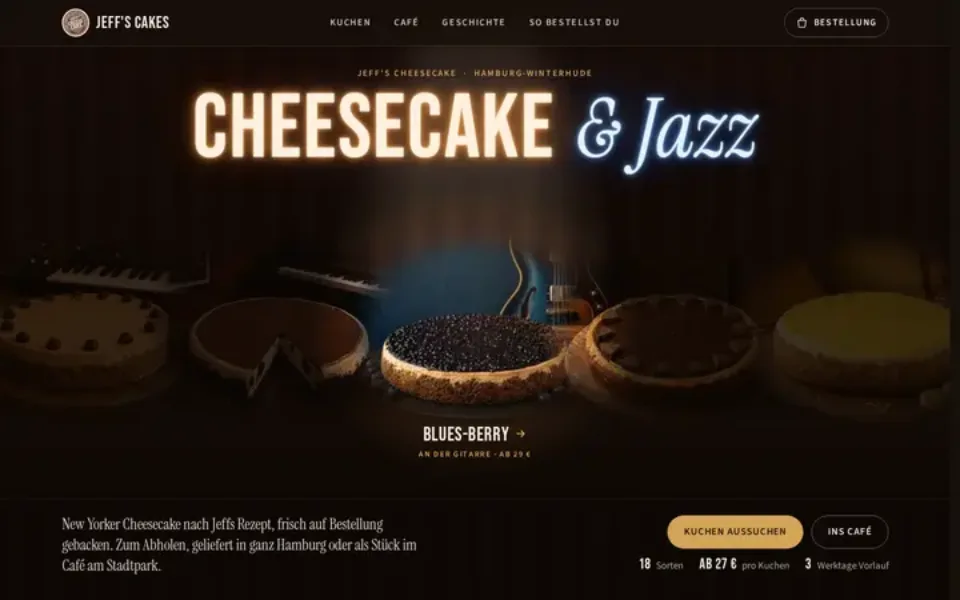
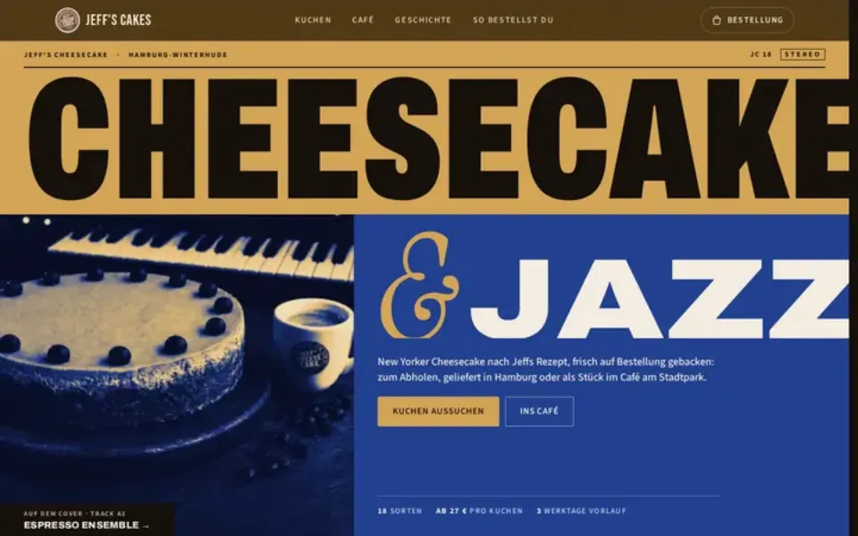
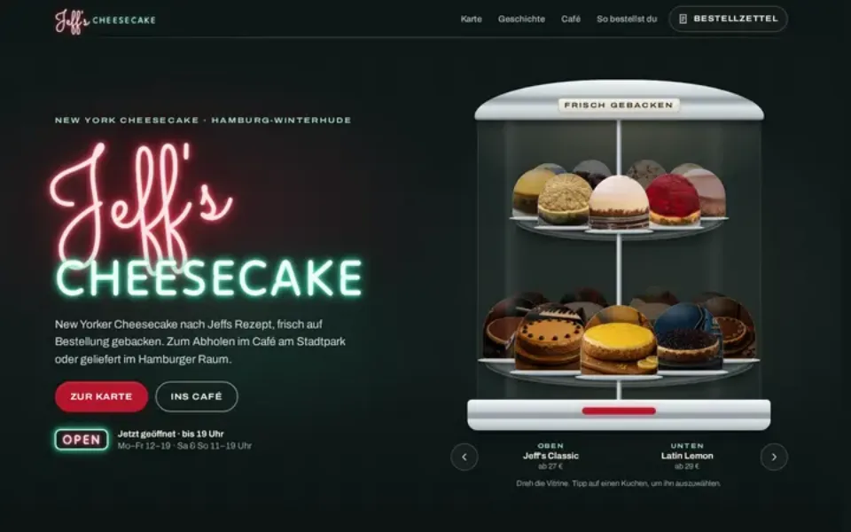
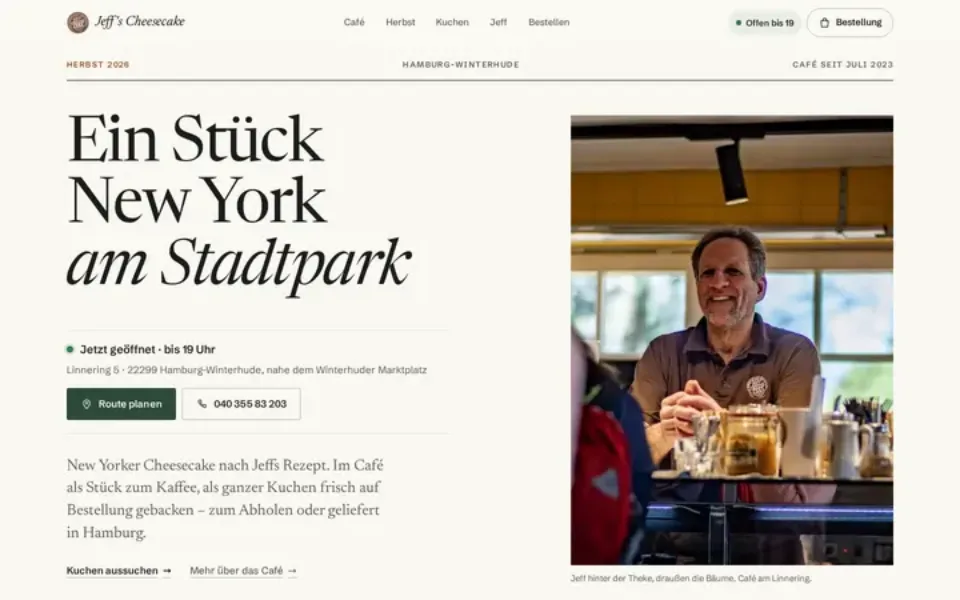
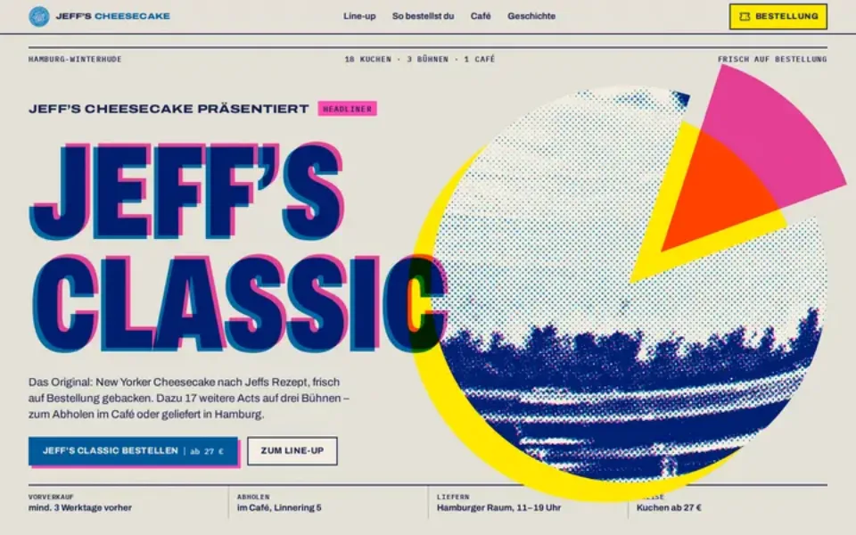

Case Study 02 / 30 · Gastronomie & Hotel
Jeff's Cakes
Modell „Cheesecake & Jazz“
Verkaufs-Entwurf als Plattencover: Setlist statt Kuchenkarte, Bestellung per E-Mail, sechs Varianten mit Jury.


Entwurf ohne Auftrag. Jeff's Cheesecake ist kein Kunde; Name und Marke gehören dem Betrieb. Laut Jury: Im Intro scheint die Platte durch die Hülle, die Drehung nimmt man kaum wahr, auf dem Handy kommen Öffnungsstatus und Route erst ganz unten. Vor einem Livegang fehlen einheitliche Kuchenfotos und die englische Fassung.
Ausgangslage
Jeff's Cheesecake backt in Hamburg-Winterhude 18 Cheesecakes mit Namen wie Blues-berry oder Banana Bossa. Besucher wollen die Karte sehen, wissen, ob das Café gerade offen hat, und mit Vorlauf bestellen oder liefern lassen. Der Entwurf zeigt, wie eine Seite aus Jeffs eigener Geschichte all das in einem Pager verbindet; beauftragt hat ihn niemand.
Idee
Jeff war als Teenager in den New Yorker Jazzclubs zu jung für die zwei Pflicht-Drinks, also gab es Cheesecake und ein Glas Milch. Die Seite wird deshalb zum Plattencover: Im Hero gleitet eine Platte mit Jeffs Logo als Label aus der Hülle und dreht sich mit 33⅓ U/min, die Kuchenkarte ist eine Setlist mit Seite A/B/C und Bonus Track. Dunkles Clubbraun und Creme, Messing als Akzent, Bebas Neue für die Titel und Instrument Serif für die Liner Notes.
Was die Seite kann
- SetlistAlle 18 Kuchen mit Preisen und Filter glutenfrei, laktosefrei, vegan; am Desktop zeigt „Jetzt läuft“ das Foto zum Track unter der Maus.
- Kuchen-DialogEin Klick öffnet den Kuchen mit Größe, Optionen und Anzahl in einem nativen Dialog, Esc schließt.
- Bestell-SchubladePosten, Abholen oder Liefern, Datum, Uhrzeit, Kontakt und PayPal oder Überweisung; auf dem Handy als Blatt von unten, per Wisch schließbar.
- Bestellregeln von jeffscakes.commindestens drei Werktage Vorlauf, Lieferung nur im Hamburger Raum (PLZ 20000–22999) zwischen 11 und 19 Uhr, Winterpause 23.12. bis 11.1.
- ÖffnungsstatusÖffnungszeiten mit Live-Status in der Zeitzone Hamburg, dazu Route, Telefon und Link zu den Google-Bewertungen.
- Liner NotesJeffs Geschichte aus New York, das Zitat leuchtet beim Scrollen Wort für Wort auf.
Eine Seite, 6 Varianten, zwei Jurys
Zur fertigen Seite sind 3 weitere Einstiege (gleiche Seite, anderer Hero) und 3 komplett eigene Designs entstanden, unabhängig voneinander gebaut. Danach hat je Gruppe eine Jury alle Seiten im Browser geöffnet, getestet und mit bis zu 100 Punkten bewertet. Die Punkte stehen an jeder Variante, bekannte Schwächen sind nicht wegretuschiert.
-

Hero-Variante Plattenkiste Eine Holzkiste mit 18 Plattenhüllen, eine pro Kuchen: durchblättern per Ziehen mit Schwung und Feder, Pfeiltasten oder Knöpfen, „Bestellen“ öffnet den Kuchen direkt. Laut Jury auf kleinen Handys und im Querformat zu groß, ein Wisch fliegt mehrere Hüllen weit. 86 / 100 JuryÖffnen -

Hero-Variante Bühne Die Kuchen stehen als Band im dunklen Jazzclub, ein Scheinwerfer folgt der Maus und holt einen ins Licht; darüber „Cheesecake & Jazz“ als ruhige Leuchtreklame. Laut Jury blitzt im Intro kurz ein heller Streifen auf, und die Lichtebene ist doppelt so breit wie der Hero. 84 / 100 JuryÖffnen -

Hero-Variante Cover Typografisches Blue-Note-Cover in Messing und Kobalt: Archivo füllt jede Zeile, das Foto liegt als Duoton darunter. Laut Jury wird der Titel ohne die Schrift abgeschnitten, und die Kobalt-Farbwelt passt nicht zu Jeffs Marke. 79 / 100 JuryÖffnen -

Eigenes Design Diner New Yorker Diner der 70er: Neonschild, drehbare Tortenvitrine mit allen 18 Kuchen unter Glasglocken, Steckbuchstaben-Tafel als Karte und ein Guest Check als Warenkorb. Laut Jury zeigt die untere Vitrinen-Etage ganze Fotos statt freigestellter Kuchen, Route und Telefon kommen auf dem Handy erst ganz unten. 86 / 100 JuryÖffnen -

Eigenes Design Stadtpark Helles Hamburger Café-Magazin: Status, Route und Telefon ganz oben, ein Saison-Aufmacher (?saison=winter usw.) und ein ruhiges Fotoraster. Laut Jury wartet der Auftritt auf Foto und Schriften, und die Saisontexte passen nicht zu jedem Monat. 82.5 / 100 JuryÖffnen -

Eigenes Design Plakat Riso-Jazzfestival-Plakat: Jeff's Classic als Headliner, die anderen Kuchen auf drei Bühnen, alle Fotos als Rasterdruck. Laut Jury nimmt der Rasterdruck den Kuchen den Appetit, und die Tippziele auf dem Handy sind klein. 78.5 / 100 JuryÖffnen
Dein Betrieb
So eine Seite für dich?
Schreib mir kurz, was du anbietest und was deine Website leisten soll. Du bekommst eine ehrliche Einschätzung, was sie kostet und was sie dir bringen kann.
Projekt anfragen